El proceso de agregar proveedores tiene como objetivo agregar un proveedor al sistema de cuentas por pagar.
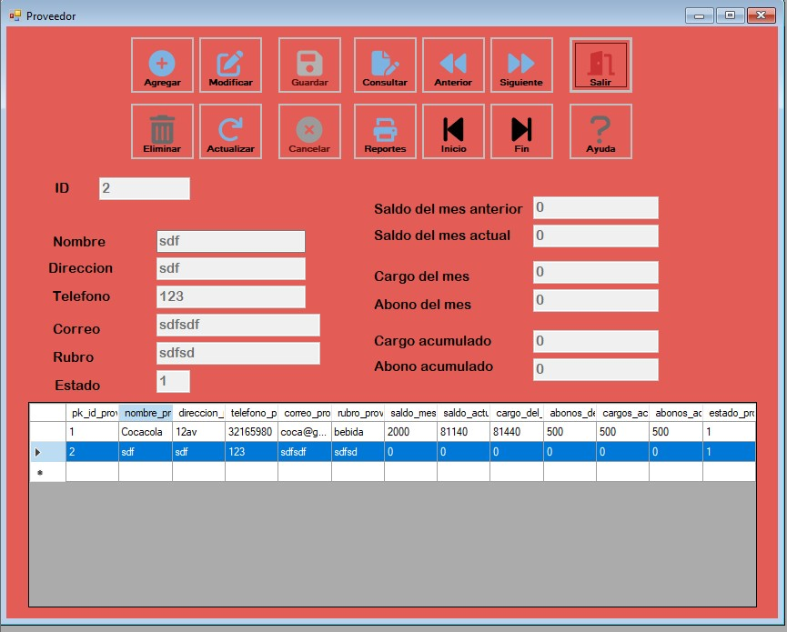Para realizar una nueva inserción de datos seleccionamos el boton "agregar".
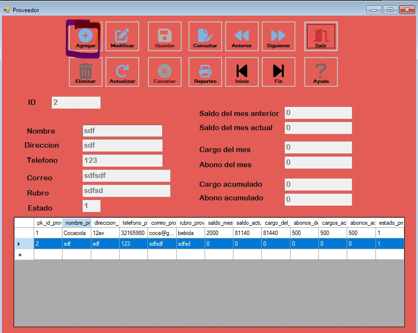Cuando presionamos el boton de agregar se habilitaran los textbox para poder agregar los datos.
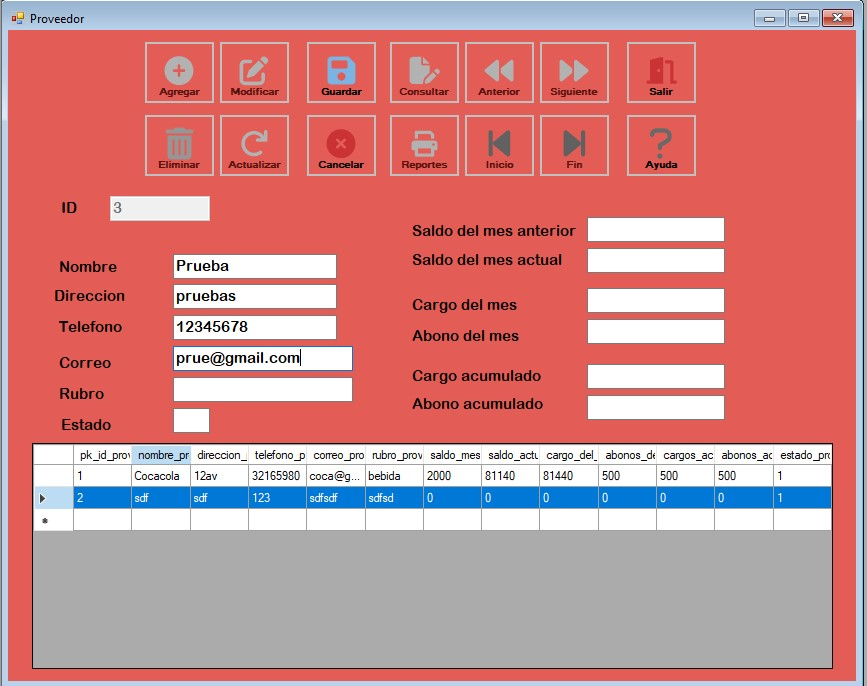Luego de haber rellenado todos los datos, presionamos "Guardar"
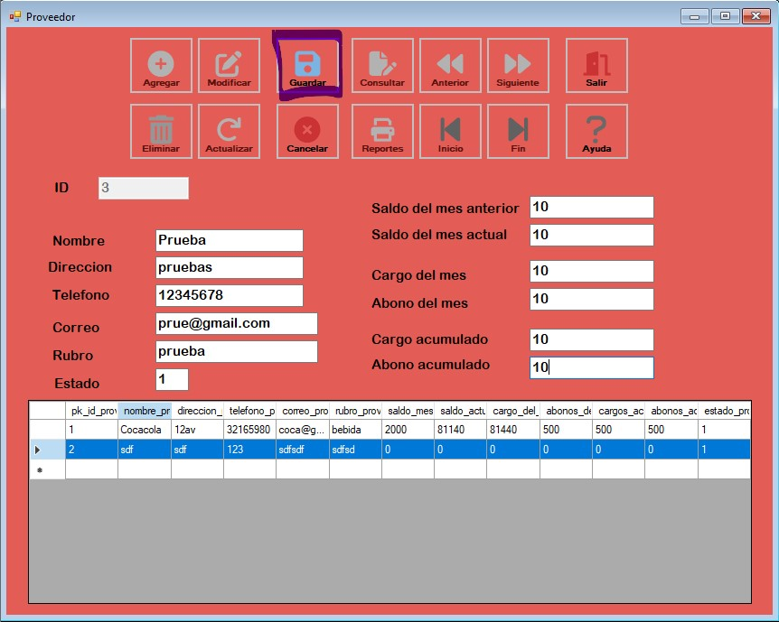Para poder ver los datos ingresados en el DataGridView, se tiene que presionar el boton "Actualizar"
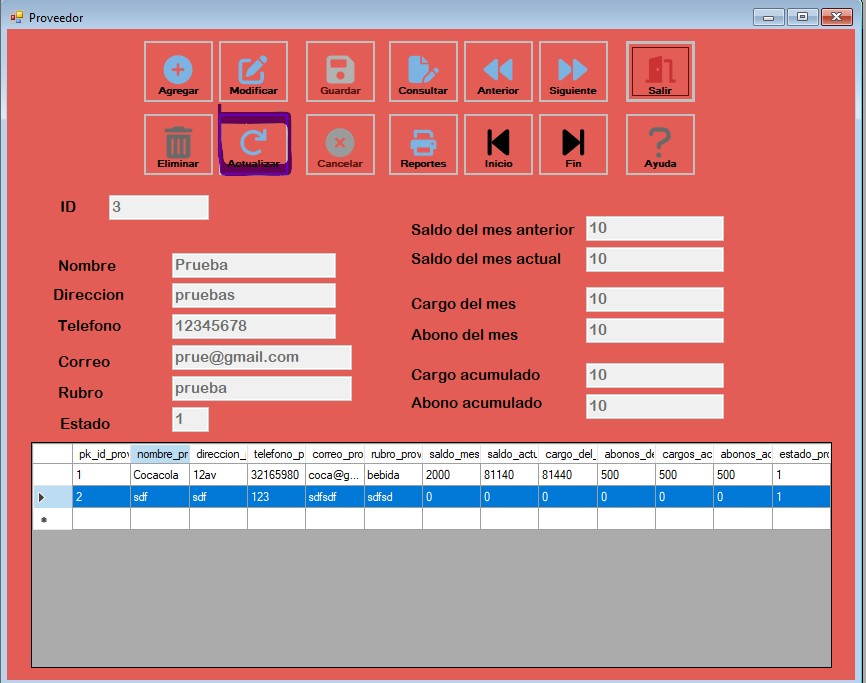 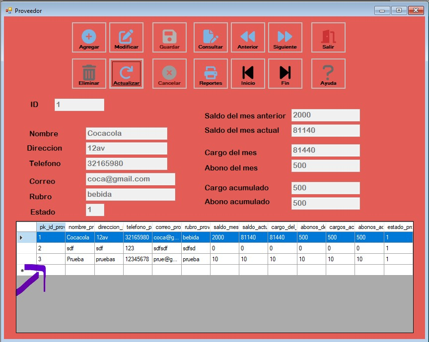Para poder moverse entre los datos que se muestran en el DataGridView presionamos el siguiente conjunto de botones
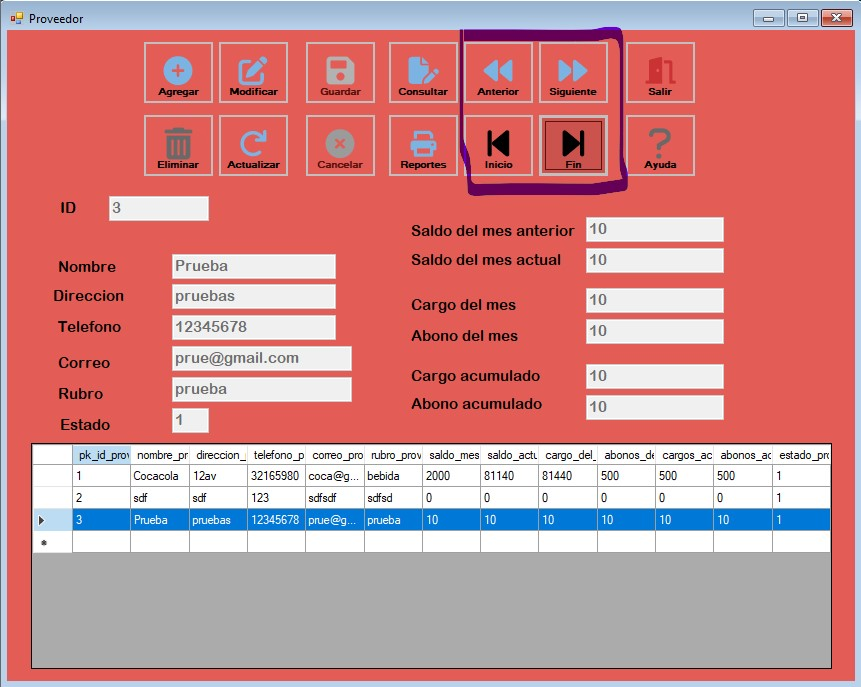Para eliminar un dato ingresado, se selecciona el dato que se desea eliminar (con ayuda de los botones de Movilidad) y presionamos el boton llamado "Eliminar"
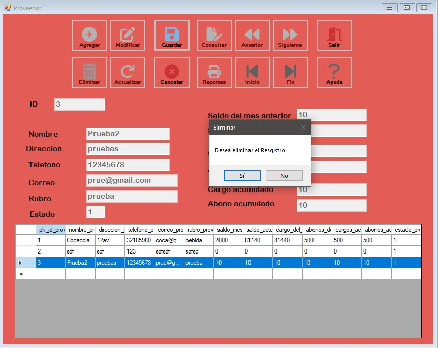Para poder modificar algun dato ingresado, se selecciona el dato que se desea modificar (con ayuda de los botones de Movilidad) y presionamos el boton llamado "Modificar"
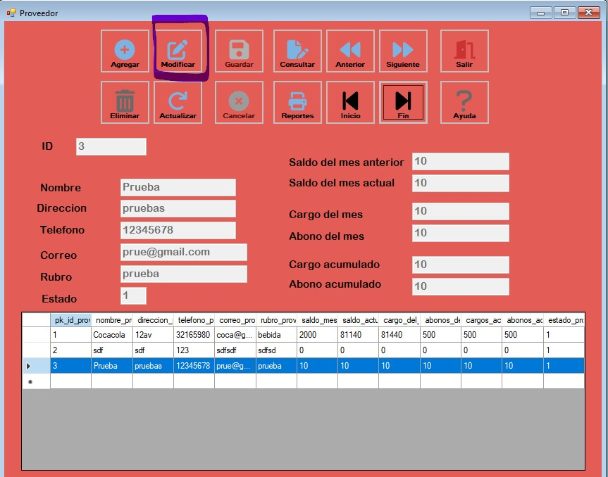luego de modificar el dato seleccionado, Presionamos el botón "Guardar"
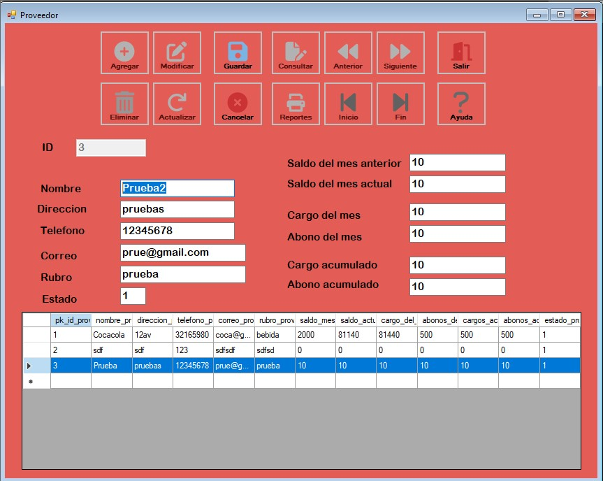 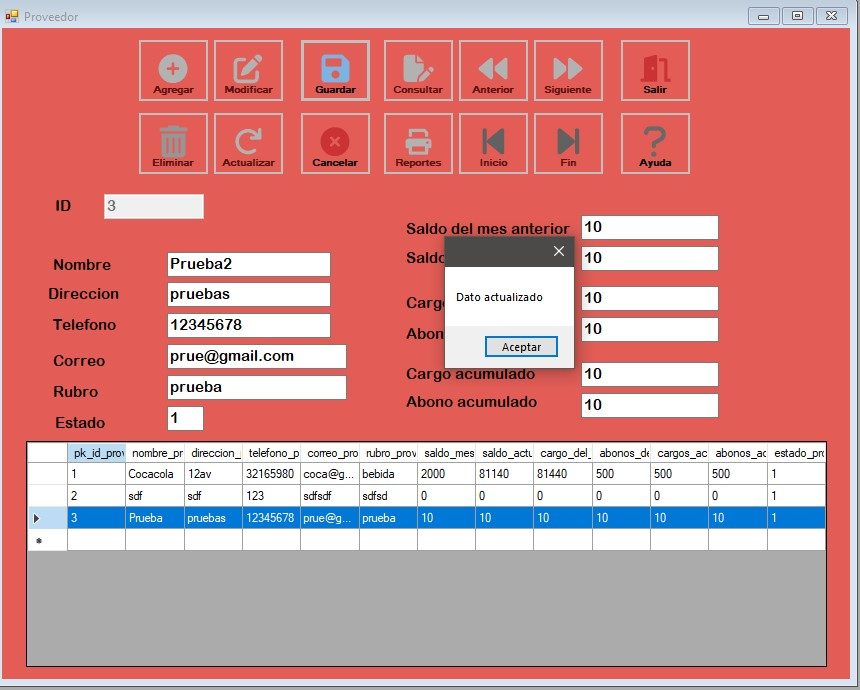Para generar un reporte de todos los datos que se encuentran en el DataGridView, presionamos en el boton llamado "Reportes"
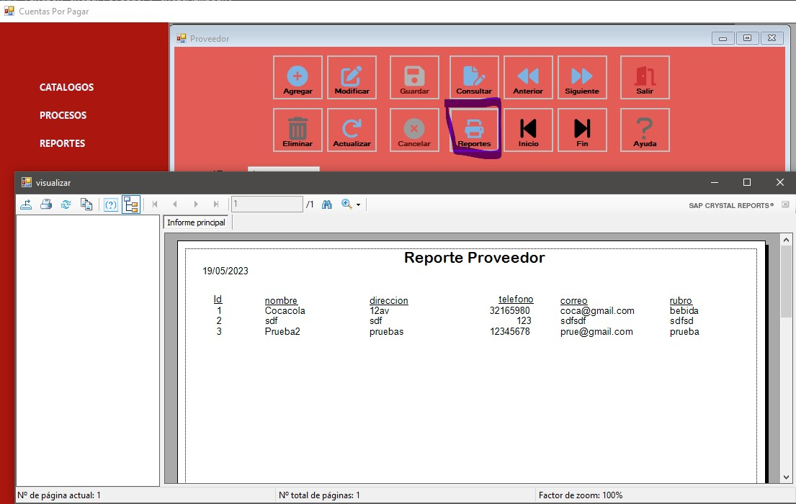